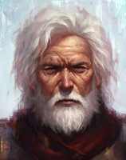

La Langue Coupée
La plupart des guildes de voleurs et d'assassins de Laelith sont installées dans la Chaussée du lac, près du port. Mais quelques-unes ont choisi d'autres quartiers, plus calmes. C'est le cas de la Langue Coupée, une discrète guilde de voleurs dont le siège se trouve sur la terrasse du Nuage.
La couverture
Au numéro 11 de l'échelle du Coude, petite ruelle qui longe l'Inlam dans un quartier nommé Basse-Eau, se trouve le Hibou Prodigue, une petite échoppe de prêteur sur gages tenue par Zonthar. Celui-ci ne fait pas partie à proprement parler de la Langue Coupée, il tient la boutique et passe ses journées derrière son comptoir. Zonthar ne participe jamais aux opérations de la guilde mais lui sert de couverture, de vigile et de receleur. La petite maison s'étend sur deux étages.
Au rez-de-chaussée on entre tout d'abord dans la boutique. La salle est sombre, seulement éclairée par la lumière de la rue qui entre par une fenêtre. Divers objets et bijoux sont posés sur les nombreuses étagères qui ornent les murs et sur le grand présentoir qui siège au centre de la pièce. La plupart proviennent des différents larcins de la guilde, et Zonthar les vend bon marché. Mais la principale activité du Hibou Prodigue est de prêter de l'argent à ses clients, à un taux très élevé bien sûr (5% pour un jour, 10% pour moins de 10 jours, 20% pour moins de 20 jours, 40% pour moins d'un mois, 100% pour moins de 2 mois), en échange d'un objet de valeur qui sert de garantie. Ceux-ci se retrouvent à la vente sur les étagères une fois le délai passé si son possesseur n'est pas revenu payer sa dette. Zonthar profite également de sa position pour écouter tout ce qui se dit dans la rue et glaner quelques informations utiles pour la Langue Coupée, tout en protégeant l'accès de la réserve qui est interdit aux personnes étrangères à la guilde. Il garde en permanence une masse d'armes sous son comptoir.
Une porte au fond de l'échoppe permet d'entrer dans la réserve, cette dernière étant creusée dans la paroi. Un désordre apparent y règne. En fait, la seule classification qui y est faite est la suivante : à droite, tous les objets en gages, à ne pas vendre tant que le délai n'a pas expiré ; à gauche, tous les objets volés par la guilde et trop voyants. Ils sont stockés ici en attendant d'être vendus à d'autres receleurs de la Chaussée du lac qui ont moins de scrupules que Zonthar à exposer certains objets. Entre les deux, une grande table en chêne. Tourner d'un quart de tour un des pieds active un mécanisme secret qui la fait basculer sur elle-même et dévoile un petit escalier creusé dans la pierre qui s'enfonce sous la réserve.
Au rez-de-chaussée, à coté de la porte de la réserve, se trouve un escalier en bois qui grimpe à l'étage. C'est là, au-dessus de la boutique, que vit Zonthar avec sa femme Claudia et ses trois enfants. L'appartement est très classique : deux chambres et une salle commune qui sert de cuisine. Zonthar n'y cache aucun objet suspect, ne voulant pas impliquer sa famille en cas de problème.
Le siège de la guilde
L'escalier que dévoile le passage secret de la réserve conduit directement dans la cave du Hibou Prodigue, qui n'est autre que le siège de la Langue Coupée. La guilde a récemment installé un piège dans cet escalier. Si un intrus pose son pied sur la troisième marche, celle-ci libère un ressort qui fait jaillir un sabre, coupant le pied de l'imprudent (jet de sauvegarde de Dextérité DD 15 pour éviter la lame ; un échec inflige 1d6 points de dégâts tranchants).
La première salle dans laquelle on pénètre n'est pas éclairée et possède deux issues. Une herse du côté de l'Inlam, et une porte à l'opposé. La herse ne peut être soulevée que de l'intérieur car elle est bloquée par un mécanisme qui se trouve dans la cave. Elle bloque l'accès à un petit tunnel qui rejoint le flanc de la crevasse. Là se trouve un escalier de bois qui remonte jusqu'à l'échelle du Coude. C'est la sortie de secours de la guilde. Dans le tunnel se trouve une porte. Les deux grilles qui la composent sont bloquées par une grosse chaîne verrouillée par un cadenas. Personne ne sait où se trouve la clé, mais cette issue menant dans le Cloaque, personne ne se soucie de sa perte ; la porte est mieux fermée ! Sont entreposés dans la cave quelques objets volés qui n'ont pas pu être mis dans la réserve, comme de nombreuses toiles d'artistes, quelques armures décoratives, et diverses grosses vaisselles en bronze et en argent.
La porte en bois dans la cave, généralement fermée à clef, donne dans la salle d'audience de la guilde de la Langue Coupée. C'est là que le maître de la guilde, assis sur un imposant trône en marbre, reçoit les membres. À part le siège du chef, il n'y a que quelques tabourets en bois placés en demi-cercle dans cette pièce, tous les membres n'étant jamais convoqués en même temps par raison de sécurité, et deux autres portes. La première, en bois, donne dans les appartements privés du chef de la guilde. La seconde, en fer et face au trône, dans la salle du trésor.
Langue Coupée, le chef, vit en permanence dans ce sous-sol, il ne sort qu'en cas de nécessité absolue, et de nuit. Zonthar lui apporte à manger tous les jours. Ses appartements sont très simples. Un lit, un coffre qui contient tous ses vêtements, un autre qui contient quelques objets personnels, et une table et une chaise où il prend ses repas. Le tunnel qui donne sur la faille est le seul endroit où quotidiennement il va prendre l'air une fois que l'obscurité de la nuit le dissimule.
La salle du trésor contient ce qui reste du fruit de tous les larcins effectués par la guilde depuis sa création. La porte est protégée par un piège qui libère un gaz empoisonné (fumées d'othur) si celle-ci n'est pas ouverte avec la clef prévue à cet effet et que possède Langue Coupée. On y trouve plus de 4000 pièces d'or et des bijoux somptueux pour une valeur de 8 à 9000 po. Les objets à vendre sont dans la réserve au rez-de-chaussée, et les membres ont bien sûr déjà pris chacun leur part du butin.
L'organisation
La Langue Coupée a été fondée il y a maintenant neuf ans. La guilde doit son nom à son chef, que tout le monde appelle « Langue Coupée ». C'est l'unique guilde de voleurs de la terrasse du Nuage. Il est vrai que le quartier se prête beaucoup moins à ces activités que le port, par exemple. Elle fédère toutes les bandes et les indépendants qui y exercent des activités de cambriolage.
La guilde offre à ses membres plusieurs sécurités :
- En premier lieu, elle s'occupe de la concurrence. Toute personne non-affiliée à la guilde et effectuant un vol sur la terrasse du Nuage sera contactée par celle-ci et priée de donner tout le butin à la guilde avec la promesse de ne jamais revenir au Nuage. En cas de refus, la guilde n'hésite pas à utiliser des moyens musclés pour faire respecter son autorité.
- La guilde exerce également une certaine coordination des larcins. Toute opération devant être annoncée à l'avance dans la salle d'audience, si deux bandes sont sur le même objectif, la Langue Coupée affectera l'opération à l'une ou à l'autre afin que les voleurs ne se gênent pas.
- La Langue Coupée est aussi un excellent centre d'information. Nombre de cambriolages sont en fait décidés par la guilde en fonction des diverses informations qu'elle a récoltées. La mission est alors confiée à une bande ou à une personne en particulier.
- Enfin, la guilde offre sa protection à ses membres. Une personne traquée peut temporairement venir trouver refuge au siège, le temps de se faire oublier. De même, si un membre a un problème personnel avec un habitant du Nuage ou bien avec une bande non-affiliée, la guilde le soutiendra et le cas échéant mettra des hommes à son service le temps de régler l'affaire.
En échange de tout ceci, chaque membre s'engage à donner à la guilde environ 20% du fruit de son activité, selon les circonstances.
Les règles
La terrasse du Nuage est un quartier tranquille, la guilde ne peut pas se permettre ce que d'autres font dans la Chaussé du lac. Ici, la discrétion est un élément primordial, les membres ne doivent pas dénoter parmi la population de la terrasse. Le chef a donc établi quelques règles strictes que tous se doivent de respecter.
- Tous les membres affiliés à la guilde doivent soigner leur tenue vestimentaire et surveiller leur langage. La terrasse du Nuage étant le quartier intellectuel de Laelith, un écart de comportement, si minime soit-il, peut attirer bien des regards.
- Si on les questionne sur leurs activités, les membres doivent répondre qu'il sont étudiants à l'Université Matérialiste Universelle. C'est une couverture difficile à démasquer du fait qu'aucun registre d'élèves n'est tenu à l'université.
- La zone d'activité est également strictement réglementée. Aucun délit ne doit être commis dans le quartier de Basse-Eaux (afin de ne pas attirer l'attention autour du Hibou Prodigue et ne pas donner de raison aux voisins de se plaindre) ni hors de la terrasse du Nuage (afin de ne pas provoquer d'autres guildes).
- Enfin, les activités de la guilde doivent principalement avoir lieu de nuit ou lorsque les brumes de la terrasse du Nuage sont épaisses, afin de pouvoir semer facilement d'éventuels poursuivants.
Les activités
Les activités de la guilde se concentrent principalement sur le cambriolage de maisons et le vol d'entrepôts, principalement de nuit et pour son propre compte. La Langue Coupée ne pratique que rarement le vol à la tire, trop voyant sur la terrasse du Nuage, et les pickpockets non-affiliés ne sont généralement pas inquiétés par la guilde qui les laisse agir à leur guise, tant que leur activité reste mineure et n'attire pas l'attention des autorités sur le Nuage.
De nombreux habitants de la terrasse étant amateurs d'art, la Langue Coupée est devenue au fil du temps une sorte de spécialiste dans ce domaine, et il arrive qu'on commande à la guilde le vol d'une pièce précise. Toutefois ces missions ne sont acceptées qu'après une stricte vérification de l'identité du commanditaire. La guilde se méfie en effet quand une personne parvient à rentrer en contact avec elle.
Relations
Langue Coupée a su, au fil du temps, instaurer la confiance au sein de la guilde. Personne ne doute de son « honnêteté ». La relation entre les membres est donc relativement bonne, le chef s'efforçant de donner du travail à tous et de faire en sorte que personne ne puisse dire qu'il favorise trop sa propre bande.
Où cela devient plus tendu, c'est dans la relation de la Langue Coupée avec les guildes de la Chaussée du lac. Certaines ne respectent en effet aucune règle et ne s'embarrassent d'aucun scrupule pour effectuer vol à la tire ou cambriolage au Nuage. Leurs manières certaines fois violentes et peu discrètes attirent régulièrement l'attention des autorités sur le quartier, ce qui bien sûr n'est pas du goût de la guilde locale. Il existe donc certaines nuits quelques règlement de comptes musclés et sanglants entre les guildes des deux quartiers.
Les membres de la Langue Coupée ont en effet pour consigne de mettre immédiatement hors d'état de nuire tout voleur identifié comme faisant partie d'une des guildes de la Chaussée du lac. Les bagarres qui en découlent sont à l'origine de nombreuses cicatrices que portent les membres de la guilde.
Intégration
Une guilde de voleurs ne se gère bien entendu pas comme une guilde de bardes ou de scribes. Ici, pas d'annonce publique, pas de bureau de recrutement au coin de la rue, pas de promotion. Non, la Langue Coupée enrôle en fait généralement de deux façons.
La première méthode est de connaître personnellement un membre de la guilde. Si ce dernier a confiance en quelqu'un, qu'il pense que celui-ci peut apporter quelque chose alors qu'il opère dans un autre quartier, il se verra discrètement proposer de venir travailler au Nuage, pour la Langue Coupée, en échange de l'acceptation des conditions de la guilde.
La deuxième façon, sans connaître un membre, est en quelque sorte de se faire remarquer par l'un d'eux. Quand un membre de la guilde surprend un autre voleur opérer au Nuage, il ne le chasse jamais directement, mais commence par l'observer. S'il juge que la personne a le potentiel et le talent nécessaire pour entrer dans la guilde, il prend contact avec lui et lui demande s'il veut s'associer, faire juste un ou deux coups ensemble. Le voleur dispose alors sans le savoir de quelques jours pour gagner la confiance du membre, et s'il réussi il lui sera alors proposé de rejoindre la guilde. Un rendez-vous sera fixé typiquement dans une taverne loin du Hibou Prodigue, et la guilde lui sera présentée. À ce stade le voleur a en fait peu de choix, car il en sait alors beaucoup trop. Soit il accepte, soit on le retrouve généralement agonisant le jour suivant dans une ruelle sombre.
Dans les deux cas, lorsque le voleur accepte de s'affilier à la guilde, le membre lui chuchotera à l'oreille juste avant de partir ce qui suit : « Rend-toi demain soir au coucher du soleil au 14 de l'échelle du Coude. Achètes-y du vin et demandes-en autant qu'on pourra t'en vendre ». Le voleur va donc se rendre au Hibou Prodigue et demander du vin. Zonthar lui demande combien de litres il en veut et s'il répond « autant que vous pouvez m'en vendre », Zonthar saura qu'il est envoyé par un membre. Il est alors invité à se rendre au sous-sol où l'attend son parrain, qui le présentera à Langue Coupée. Celui-ci se livre à un interrogatoire assez poussé sur le sujet, le questionnant sur son passé, son présent et sa vision du futur. Le chef fait en général passer ces entretiens en présence de Kain et d'Angela. Si les trois opinent pour l'acceptation de la nouvelle recrue, alors l'affaire est réglée. Dans le cas contraire, chacun essaye de convaincre les autres, et généralement un consensus est trouvé.
À moins que le voleur ne connaisse personnellement un membre de la bande à Langue Coupée, tous les postulants sont uniquement affiliés à la guilde, pas introduits dans la bande. L'intégration à cette dernière est un processus beaucoup plus long, Langue Coupée ne donnant pas sa confiance aussi facilement à quelqu'un.
Membres
La raison d'être de la guilde est donc la fédération des voleurs sur la terrasse du Nuage. La guilde compte aujourd'hui un peu plus d'une trentaine de membres :
- La composante principale de la guilde est la bande de Langue Coupée, le chef. Ce dernier et ses sept acolytes (voir plus bas) forment la base de la guilde, le « Cercle ». Rien ne se fait au Nuage dans ce domaine sans leur accord. Il est fréquent que le Cercle se garde les meilleurs coups pour lui.
- Par ordre d'importance des autres membres, les affiliés, vient ensuite la bande dite « Les Prêtres ». Au nombre de six, ces voleurs sont spécialisés dans les affaires relatives au temple du Nuage. Ils y ont à priori un excellent informateur (qu'ils n'ont jamais voulu révéler à Langue Coupée) qui a mis la guilde sur de nombreux coups juteux à l'intérieur du temple.
- La dernière bande se fait appeler « Les Nobles ». Formée par quatre membres d'une même famille, eux exercent principalement autour de la place dite Sous la Haute Terrasse. Ce sont les seuls à avoir fait du pickpocket leur revenu principal, les personnes vivant dans ce quartier étant les plus riches de la terrasse. Eux ne supportent pas la concurrence en ce domaine dans leur zone de travail.
- Les autres membres de la guilde, une petite quinzaine, agissent en solo ou à deux, pas plus. La bande de Langue Coupée fait fréquemment appel à eux lorsqu'elle est sur un gros coup nécessitant plus de personnel.
Le nombre d'affiliés à la guilde suit une évolution normale : des jeunes nouveaux arrivent, des anciens se retirent, des membres sont capturés par les autorités, et certains malheureusement disparaissent en opération ou lors de règlements de compte avec les autres guildes. La moyenne d'âge est donc plutôt jeune.
Le Cercle, la bande de Langue Coupée
La guilde a été fondée sur les bases de la propre bande de Langue Coupée, le Cercle. Ses membres constituent le pilier central de la guilde.
« Langue Coupée ». Personne ne connaît le véritable nom du fondateur de la guilde qui doit son surnom à sa langue, taillée dans le sens de la longueur par une dague lors d'une rixe. Depuis il zozote, mais personne dans l'organisation ne se risquerait à se moquer de son défaut de prononciation. Ceux qui l'ont fait ne sont plus là pour témoigner ! Cheveux blancs, regard bleu inquisiteur, visage entaillé par une grande cicatrice, le manque d'air se note sur son physique (il passe son temps au sous-sol du Hibou Prodigue). Langue Coupée est une personne très intelligente, rusée et méfiante. C'est sûrement grâce à cela que sa guilde existe après toutes ces années ; il aurait passé la cinquantaine. Il dirige la guilde de manière sévère mais juste. Personne ne peut se plaindre de ses décisions, les partages sont toujours équitables.
Kain « l'ancien ». Kain est un nain de 211 ans et le plus fidèle compagnon de Langue Coupée. Natif de Laelith, c'est le seul membre qui fait partie de la bande depuis sa fondation et le seul en qui le chef a une absolue confiance. Il est très habile de ses mains et est un expert en désamorçage des pièges de toutes sortes. C'est d'ailleurs en général le premier à entrer dans les pièces lors des cambriolages. Il habite seul au 21 de l'échelle du Coude dans un petit appartement, mais passe presque tout son temps au siège de la guilde la journée, et en maraude la nuit. Malgré son allure sérieuse, c'est quelqu'un de fort sympathique qui a toujours une bonne blague à raconter. Il tempère souvent les excès de colère de Langue Coupée envers les autres membres de la guilde. Kain boite légèrement de sa jambe gauche depuis une mauvaise chute par une fenêtre il y a de cela quelques années déjà. Question bière, il en boit, mais avec modération, suivant les critères nains. Son arme favorite est le marteau.
Loken Imalael. Fils d'un riche elfe d'Egonzasthan-la-Basse, Loken s'est rebellé contre l'autorité paternelle et s'est enfui de son foyer avant sa majorité. Il a été recruté par la guilde il y a deux ans, le jour où il a essayé de voler la bourse de Kain dans une rue sur la terrasse du Nuage. C'est un rebelle qui conteste toujours les choix de la guilde mais se plie tout de même à la décision finale. Il ne se sépare jamais de ses deux dagues dont il sait se servir à la perfection. L'elfe effectue en général la plupart des travaux de repérage pour la bande de Langue Coupée et fait le guet durant les cambriolages. Il a le don d'agacer Kain disant blanc chaque fois que le nain dit noir, mais l'ancien lui pardonne car il effectue toutefois remarquablement son travail. Jeune et elfe, qu'attendre d'autre de lui de toutes manières... Loken fréquente actuellement une jeune fille elfe barde qui est venue à Laelith pour lancer sa carrière artistique.
Angela « la rouge ». La rouge est une jeune humaine de 19 ans. Rousse, belle, voluptueuse, c'est la seule femme de la guilde. Elle doit son surnom à la couleur de sa chevelure. Le chef a beaucoup d'affection pour elle et la considère un peu comme sa fille, sentiment réciproque. Elle est dans la bande depuis plus de six ans déjà. Angela est en fait la fille d'un ancien membre de la guilde qui, le jour de sa mort, a fait promettre à Langue Coupée de s'occuper d'elle. Sa maturité, son sens de la diplomatie et son tempérament posé en fait aujourd'hui un très bon conseil et Langue Coupée ne manque pas de lui demander son avis fréquemment, son intuition ne l'ayant en effet jamais trompée jusque là. Angela, malgré son jeune âge, est généralement la coordinatrice durant les opérations, la représentation de Langue Coupée sur le terrain. Au sein de la guilde, elle joue également le rôle de comptable, et on ne lui connait aucune relation amoureuse jusque là. Elle manie parfaitement bien la rapière. La sienne s'appelle « âme ».
Lilo « le joyeux ». Lilo est un halfelin de 45 ans, mais il est toujours compliqué pour les autres races de donner un âge à un halfelin. Il est entré dans la bande quelques jours seulement avant Loken. Ce petit homme blond est la principale source d'information de la guilde. Il passe son temps à flâner dans les rues et à écouter tout ce qu'il s'y dit. Tout ce qui se passe au Nuage, Lilo le sait, l'a vu ou l'a entendu dire. Son frère Stich est prêtre de Yondalla au temple du Nuage et essaye depuis des années de convaincre Lilo de quitter ce métier, sans succès jusque là. Le halfelin est également un très bon cambrioleur, adroit et discret. C'est également le contact principal avec les autres bandes de la terrasse. Il doit son surnom à son sourire, qu'il arbore en toutes circonstances, même les plus tragiques. Son point faible : le chocolat. L'halfelin dépense une fortune toutes les semaines pour se procurer le meilleur de la production de Kaoca. Lilo est tout d'abord entré dans la guilde par l'intermédiaire du père d'Angela. C'est un expert à la fronde.
Kevlo « le gaucher ». Kevlo, comme son surnom l'indique, est gaucher. Âgé de 23 ans, c'est la dernière recrue de la bande. Il ne travaille pas depuis plus de trois mois au côté de Langue Coupée, mais son talent en a vite fait le cambrioleur numéro 1 de la guilde. Dans la famille de Kevlo on est voleur de père en fils depuis des générations. Son père est d'ailleurs dans les cachots des geôles de Laelith depuis cinq ans pour le crime de vol à la tire sur un prêtre du temple de l'Oiseau de feu. Langue Coupée n'a jamais vu quelqu'un de si habile de ses mains depuis qu'il a fondé la guilde et c'est depuis trois mois toujours Kevlo qui est envoyé sur les coups les plus difficiles. Kain l'a pris sous son aile et compte en secret en faire son successeur au côté de Langue Coupée, le nain ayant en effet l'intention de se mettre à la retraite dans quelque temps. Kevlo est tombé amoureux d'Angela, mais n'ose rien en dire pour le moment par peur de la réaction de Langue Coupée. Il vit avec sa mère sur la terrasse du Châtiment, proche du pont des morts. Son arme favorite est l'épée longue.
Shinka Merej. Shinka est un mystère pour tous les membres de la Langue Coupée car il ne participe à aucune opération de vol ou de cambriolage. Le chef l'a personnellement introduit dans la guilde il y a un peu plus de huit mois, suite à la perte de trois éléments lors d'un affrontement avec les guildes de la Chaussée du lac. Le demi-elfe ne parle jamais avec les autres membres de la guilde, uniquement seul à seul avec le chef. Seul Kain connait sa raison d'être parmi la guilde. Angela est d'ailleurs fâchée de ne pas être dans la confidence. En réalité, Shinka a été engagé comme agent spécial. C'est une sorte de transfert de la guilde d'assassin du Lacet. Lors des opérations, son rôle n'est pas comme Loken de prévenir la bande de l'arrivée des autorités ou du propriétaire, mais de surveiller la concurrence. Shinka espionne en effet afin de savoir si dans l'ombre quelqu'un ne surveille pas le groupe, ce dernier n'étant même pas au courant de la présence du demi-elfe sur les lieux des larcins. Shinka est un tueur, c'est le seul à qui Langue Coupée a directement donné l'ordre d'éliminer tout fauteur de trouble. Le chef le charge également de suivre discrètement un membre lorsque sa loyauté envers la guilde est mise en doute. Il porte en permanence sur lui une arbalète, une épée longue et deux dagues.
Zonthar. C'est le frère de Gonthar, un des quatre ezmers de la garde pourpre du Roi-Dieu. Il a lui aussi essayé de se faire engager par l'armée, mais a été réformé. C'est à ce moment que Langue Coupée, le cousin de sa femme Claudia, lui a proposé de tenir la boutique du Hibou Prodigue. Il n'est pas voleur de formation et ne participe pas aux opérations de la guilde. Il entretient de bonnes relations avec son frère et s'est toujours refusé pour le moment de s'en servir d'une manière ou d'une autre au profit de la guilde. Gonthar ne connait bien évidement rien du lien entre Zonthar et la Langue Coupée.
Basé sur le HS Laelith de Casus Belli, complété par blueace, plan par Kosmic Dungeon